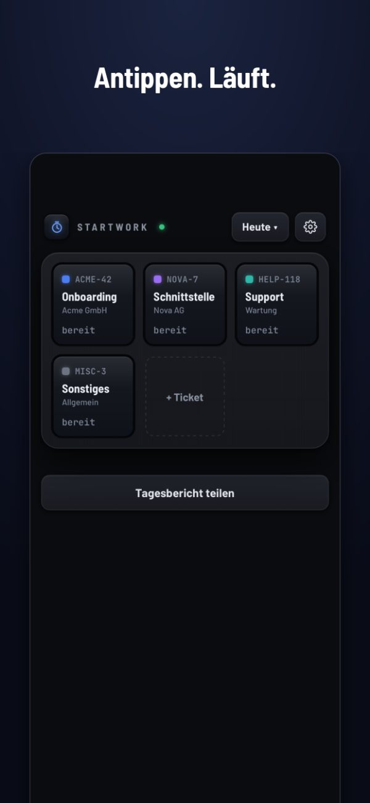
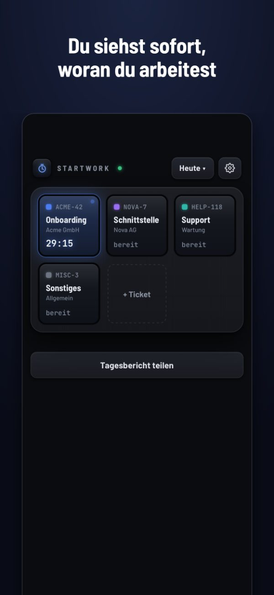
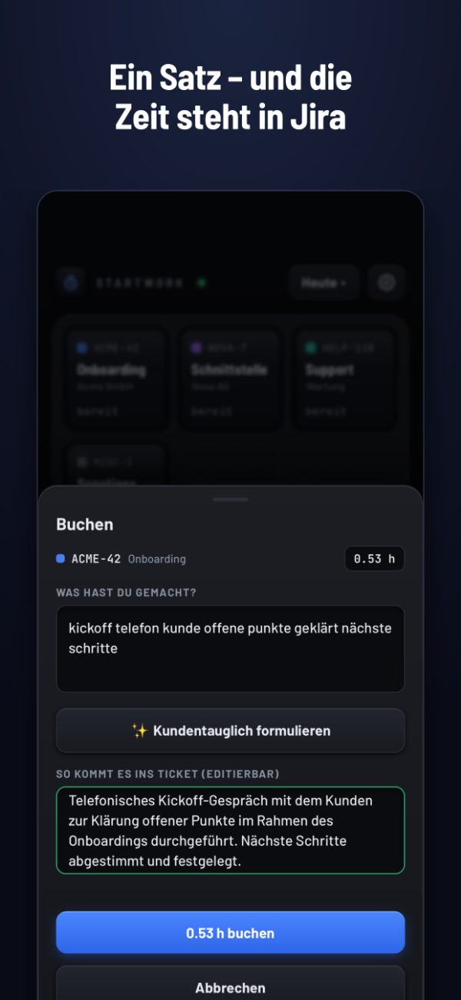
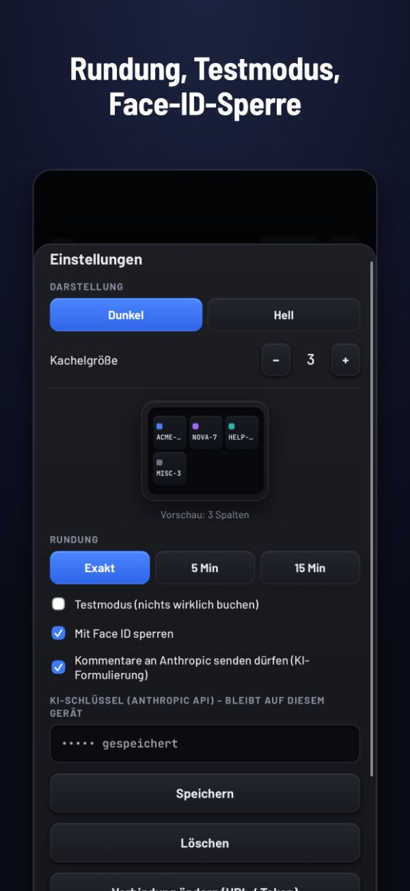

StartWork
Zeit in Jira buchen ohne Drama
Kachel antippen – die Uhr läuft. Nochmal tippen, in einem Satz sagen, was du gemacht hast – steht in Jira. Kein Konto, keine Cloud, nichts zu beantragen.
2,99 € · Einmalkauf · kein Abo · iPhone




Kein Konto, keine Cloud
StartWork läuft auf deinem iPhone. Es gibt keinen Server von uns und keine Anmeldung. Deine Zeiten gehen direkt in dein eigenes Jira – nirgendwo sonst hin.
Einmal zahlen
Ein Kauf. Kein Abo, keine Werbung, keine Datensammlung, keine Folgekosten.
Für alle, die nach Stunden abrechnen
Berater, Freelancer, Agenturen: buchen in dem Moment, in dem du die Aufgabe wechselst – nicht freitags aus dem Gedächtnis.
Was die App kann
- Kacheln für deine üblichen Tickets, Titel kommt aus Jira
- Tickets per Schlüssel oder eingefügtem Jira-Link hinzufügen
- Rundung auf 5 oder 15 Minuten, wenn deine Firma das so will
- Testmodus: sehen, was gebucht würde, bevor wirklich gebucht wird
- Mitteilung, solange eine Uhr läuft – damit du sie nicht vergisst
- Face-ID-Sperre – auf dem Gerät liegt ein Jira-Token
- Tagesbericht zum Teilen, dazu die Vortage fürs Daily
- Optional: Kommentare für den Kunden per KI glätten – mit eigenem Anthropic-Schlüssel und nur nach ausdrücklicher Zustimmung
Bevor du kaufst
StartWork braucht eine Jira-Instanz, bei der du dich mit eigenem Token anmelden darfst. Unterstützt werden Jira Cloud, Server und Data Center.
Gebucht wird als normales Jira-Worklog. Nutzt deine Firma Tempo mit Pflichtfeldern („Work Attributes“), bleiben diese leer.
Fragen
Wie buche ich Zeit in Jira vom iPhone aus?
StartWork installieren, einmal Jira-Adresse und API-Token eintragen, deine Tickets als Kacheln anlegen. Kachel antippen startet die Uhr, nochmal tippen stoppt sie, einen Satz schreiben – StartWork bucht ihn als Worklog auf das Ticket.
Funktioniert das mit Tempo?
Ja. StartWork schreibt normale Jira-Worklogs, die Tempo liest. Pflichtfelder von Tempo („Work Attributes“) werden nicht befüllt.
Welche Jira-Versionen werden unterstützt?
Jira Cloud (Anmeldung mit E-Mail und API-Token) sowie Jira Server und Data Center (persönliches Zugriffstoken).
Was passiert mit meinen Daten?
Sie bleiben auf deinem iPhone und gehen nur an dein eigenes Jira. Keine Analyse, kein Tracking, kein Konto bei uns.
Ist das ein Abo?
Nein. Du zahlst einmal im App Store.